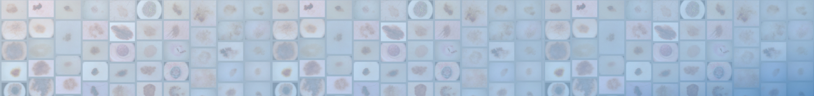

[ Introduction | Invited Speakers | Important Dates | Paper Submission | Datasets | Program Schedule | Organizers | Past Workshops ]
09/16/2025: Datasets section updated09/04/2025: Datasets section updated
09/02/2025: Invited speakers and program schedule updated
06/25/2025: Submission deadline extended and PC updated
04/29/2025: Section on past workshops added
03/26/2025: Website launched
Tenth
ISIC Skin Image Analysis Workshop
@ MICCAI 2025
Hosted by the International Skin Imaging Collaboration (ISIC)
Introduction
Skin is the largest organ of the human body, and is the first area of a patient assessed by clinical staff. The skin delivers numerous insights into a patient’s underlying health: for example, pale or blue skin suggests respiratory issues, unusually yellowish skin can signal hepatic issues, or certain rashes can be indicative of autoimmune issues. In addition, dermatological complaints are also among the most prevalent in primary care (Lowell et al., 2001). Images of the skin are the most easily captured form of medical image in healthcare, and the domain shares qualities to standard computer vision datasets, serving as a natural bridge between standard computer vision tasks and medical applications. However, significant and unique challenges still exist in this domain. For example, there is remarkable visual similarity across disease conditions, and compared to other medical imaging domains, varying genetics, disease states, imaging equipment, and imaging conditions can significantly change the appearance of the skin, making localization and classification in this domain unsolved tasks.
This workshop will serve as a venue to facilitate advancements and knowledge dissemination in the field of skin image analysis, raising awareness and interest for these socially valuable tasks. Invited speakers include major influencers in computer vision and skin imaging, and authors of accepted papers.
Lowell et al. “Dermatology in Primary Care: Prevalence and Patient Disposition,” Journal of the American Academy of Dermatology, vol. 45, no. 2, pp. 250–255, 2001.
Topics of interest include:
- Computer Vision in Dermatology and Primary Care
- Few-Shot Learning for Dermatological Conditions
- Skin Analysis from Dermoscopic Images
- Skin Analysis from Clinical Photographs
- Skin Analysis from Video
- Skin Analysis from Total-Body Photography and 3D Skin Reconstructions
- Skin Analysis from Confocal Microscopy
- Skin Analysis from Optical Coherence Tomography (OCT)
- Skin Analysis from Histopathological Images
- Skin Analysis from ex-vivo and Fluorescence Microscopy
- Skin Analysis from Multi-Modal Data Sources
- Explainable Artificial Intelligence (XAI) Related to Skin Image Analysis
- Algorithms to Mitigate Class Imbalance
- Uncertainty Estimation Related to Skin Image Analysis
- Human-Computer Interaction & Application Workflows for Skin Image Analysis
- Robustness to Bias from Clinical and User-Originating Photography
- Assessing and Creating Fairness of Skin Analysis in Underrepresented Groups
- Combined Application of Image Analysis and Large Language Models/Natural Language Processing (e.g., applied to EHR)
- Skin Cancer Prognosis and/or Risk Stratification Using Skin
Imaging Data
- Best Paper Award
- Honorable Mention Award
Invited Speakers
The workshop will feature several prominent names in the field of skin image analysis, including:
|
|
Associate Professor Zongyuan Ge conducts interdisciplinary research at the boundary between Medical Artificial Intelligence, Computer-aided Diagnosis, Biomedical Engineering, Digital Health, Medical Imaging and Machine Learning and is a multi-award-winning medical information science and technology entrepreneur. His research leverages cutting-edge AI technologies using large-scale multi-modality medical data including imaging, biological signal, medical records, genomics data, multi-omics and models the clinicians’ medical knowledge underlying tasks like diagnosis, prognosis, disease management and treatment for eye (ophthalmology), skin (dermatology), heart (cardiovascular) and neurodegeneration diseases such as epilepsy, dementia and multiple sclerosis. |
|
|
Nicholas R Kurtansky is an administrator of the ISIC Archive and a researcher at Memorial Sloan Kettering. He led the planning, execution, and reporting of both the ISIC 2020 and 2024 Grand Challenges, and has played a central role in feature implementation and dataset curation for the past six years. With an academic background in statistics and public health, he currently works as a Senior Data Analyst in the Dermatology Service. His research in melanoma covers the assessment of risk-prediction models and clinically-deployed decision support tools as well as epidemiology, lesion morphology, and disease management. |
Important Dates
| July 9, 2025: | Paper Submission Deadline (23:59 Pacific Time) |
| July 29, 2025: | Author Notifications |
| July 31, 2025: | Camera-Ready Submission Deadline (23:59 Pacific Time) |
| September 23, 2025: | In-Person Workshop @ MICCAI 2025 (13:30-18:00 Korean Standard Time) |
Paper Submission
For paper submissions, the conference guidelines are followed (double-blind review process, up to 8 pages of text, figures, and tables + up to 2 pages of references). Accepted papers will be published in a Lecture Notes in Computer Science (LNCS) volume to be published by Springer Nature.
The Microsoft CMT service will be used for managing the peer-reviewing process for this workshop. This service was provided for free by Microsoft and they bore all expenses, including costs for Azure cloud services as well as for software development and support.
Public Datasets for Skin Image Analysis Research
- Derm7pt: Over 2,000 dermoscopic and clinical images of skin lesions with 7-point checklist criteria and diagnostic category information.
- Dermofit Image Library: 1,300 clinical images of skin lesions with diagnostic category information and segmentation masks.
- Diverse Dermatology Images: 656 clinical images of skin lesions with diverse skin tone representation and diagnostic category information.
- DERM12345: 12,345 high-resolution dermatoscopic images with 5 super classes, 15 main classes, and 40 subclasses.
- Fitzpatrick 17k: 16,577 clinical images with skin condition labels and skin type labels based on the Fitzpatrick scoring system.
- HIBA Skin Lesions Dataset: 1,616 skin lesion images (1,270 dermoscopy and 346 clinical) acquired at the Department of Dermatology of Hospital Italiano de Buenos Aires (HIBA) in Argentina.
- ISIC 2018 / ISIC 2019 / ISIC 2020: The ISIC has organized the world’s largest repository of dermoscopic images of skin (157,000+ images, 69,000+ of which are publicly available) to support research and development of methods for segmentation, feature extraction, and classification. These datasets are snapshots used for the 2018, 2019, and 2020 ISIC melanoma detection challenges. See also the HAM10000 and BCN20000 datasets.
- ISIC 2024: These datasets contain 15mm-by-15mm field-of-view cropped images, centered on distinct lesions, that were extracted from 3D total body photographs (TBPs). The official training dataset for the ISIC 2024 challenge is the SLICE-3D Dataset: 400,000 skin lesion image crops extracted from 3D TBP for skin cancer detection. The official testing dataset contain tiles from a separate set of patients.
- MED-NODE: 170 clinical images of skin lesions with diagnostic category information.
- MILK10k: The overarching goal of this benchmark is to develop image analysis tools that classify the diagnosis of skin lesions using the following set of information for each case: (i) clinical close-up image, (ii) dermatoscopic image, and (iii) metadata. The training dataset contains 5,240 lesions, and a blind held-out test dataset contains 479 lesions.
- PAD-UFES-20: Over 2,200 clinical images of skin lesions with associated metadata.
- PH2: 200 dermoscopic images of melanocytic lesions with detailed annotation.
- SCIN: 10,000+ clinical images of skin, nail, or hair conditions with detailed annotation. For details, visit here.
- SD-128 / SD-198 / SD-260: 6,584 clinical photographs covering 128/198/260 distinct skin disorders.
Program Schedule
Date/Time: September 23, 13:30-18:00 KST
Location: Room DCC1-2F-204, Exhibition Hall 1 (DCC 1), Daejeon Convention Center (Daejeon, Republic of Korea)
| 13:30: | Opening Remarks (Kumar Abhishek) [Slides] |
| 13:34: | Invited Talk 1: Scaling Medical AI: Foundation Models, Clinical Impact, and the MAVERIC Supercomputing Future (Zongyuan Ge) [Slides] |
| 14:10: | Oral Presentation 1: LesionGen: A Concept-Guided Diffusion Model for Dermatology Image Synthesis. Jamil Fayyad* (University of Victoria, Canada), Nourhan Bayasi (University of British Columbia, Canada), Ziyang Yu (University of Toronto, Canada), and Homayoun Najjaran (University of Victoria, Canada) [Paper] [Slides] |
| 14:34: | Short Break 1 |
| 14:42: | Oral Presentation 2: Fitzpatrick Thresholding for Skin Image Segmentation. Duncan Stothers* (University of British Columbia, Canada), Lia Gracey (University of Texas at Austin, USA), Carlie Reeves (University of Mississippi Medical Center, USA), and Sophia Xu (Columbia University, USA) [Paper] [Slides] |
| 15:06: | Oral Presentation 3: What Can We Learn from Inter-Annotator Variability in Skin Lesion Segmentation? Kumar Abhishek* (Simon Fraser University, Canada), Jeremy Kawahara (AIP Labs, Hungary), and Ghassan Hamarneh (Simon Fraser University, Canada) [Paper] [Slides] |
| 15:30: | Coffee Break (Location: Exhibition Hall DCC 2) |
| 16:00: | Invited Talk 2: From Principles to Practice: Managing a Medical Research Data Repository (Nicholas R Kurtansky) [Slides] |
| 16:36: | Oral Presentation 4: Topology-Aware Deep Models for Skin Lesion Classification. Sayoni Chakraborty (University of Texas at Dallas, USA), Philmore Koung (University of Texas at Dallas, USA), and Baris Coskunuzer* (University of Texas at Dallas, USA) [Paper] [Slides] |
| 17:00: | Short Break 2 |
| 17:08: | Oral Presentation 5: Retrieval-Augmented VLMs for Multimodal Melanoma Diagnosis. Jihyun Moon (Handong Global University, South Korea) and Charmgil Hong* (Handong Global University, South Korea) [Paper] [Slides] |
| 17:32: | Oral Presentation 6: Lightweight Dual-Task Framework for Semi-Supervised Lesion Segmentation with Knowledge Distillation from SAM. Xuan-Loc Huynh (Boston University, USA), Huy-Thach Pham (North Carolina Agricultural and Technical State University, USA), Thanh-Minh Nguyen (AI Vietnam Research Lab, Vietnam), Tran Quang Khai Bui (AI Vietnam Research Lab, Vietnam), Tat-Bach Nguyen (Iowa State University, USA), Quan Nguyen (Posts and Telecommunications Institute of Technology, Vietnam), Minh Huu Nhat Le (Methodist Hospital, USA), Phat K. Huynh (North Carolina Agricultural and Technical State University, USA), and Anh Vu* (University of Houston, USA) [Paper] [Slides] |
| 17:56: | Closing Remarks (Kumar Abhishek) |
Organizers
Sponsors:
Workshop Organizers:
- M. Emre Celebi, Ph.D. (University of Central Arkansas, Conway, AR, USA)
- Catarina Barata, Ph.D. (Instituto Superior Técnico, Lisbon, Portugal)
- Allan Halpern, M.D. (Memorial Sloan Kettering Cancer Center, New York City, NY, USA)
- Philipp Tschandl, M.D. Ph.D. (Medical University of Vienna, Vienna, Austria)
- Marc Combalia, M.Sc. (Kenko AI, Barcelona, Spain)
- Yuan Liu, Ph.D. (Google, Mountain View, CA, USA)
- Kumar Abhishek, M.Sc. (Simon Fraser University, Burnaby, BC, Canada)
- Joanna Jaworek-Korjakowska, Ph.D. (AGH University of Kraków, Krakow, Poland)
- Moi Hoon Yap, Ph.D. (Manchester Metropolitan University, Manchester, England)
Steering Committee:
- Noel C. F. Codella, Ph.D. (Microsoft, Redmond, WA, USA)
- Anthony Hoogs, Ph.D. (Kitware, Clifton Park, NY, USA)
- Yun Liu, Ph.D. (Google Health, Palo Alto, CA, USA)
- Dale Webster, Ph.D. (Google Health, Palo Alto, CA, USA)
Program Committee:
- Euijoon Ahn, James Cook University, Australia
- Sandra Avila, University of Campinas, Brazil
- Nourhan Bayasi, University of British Columbia, Canada
- Lei Bi, University of Sydney, Australia
- Siyi Du, Imperial College London, England
- Ghassan Hamarneh, Simon Fraser University, Canada
- Jeremy Kawahara, AIP Labs, Hungary
- Jinman Kim, University of Sydney, Australia
- Sinan Kockara, Rice University, USA
- Kivanc Kose, Memorial Sloan Kettering Cancer Center, USA
- Tim K. Lee, University of British Columbia, Canada
- Carlos Santiago, Instituto Superior Técnico, Portugal
- Janet Wang, Tulane University, USA
- Yuheng Wang, University of British Columbia, Canada
- Fengying Xie, Beihang University, China
Contact Email:
- workshop@isic-archive.com
- Ninth ISIC Skin Image Analysis Workshop @ MICCAI 2024
- Eighth ISIC Skin Image Analysis Workshop @ MICCAI 2023
- Seventh ISIC Skin Image Analysis Workshop @ ECCV 2022
- Sixth ISIC Skin Image Analysis Workshop @ CVPR 2021
- Fifth ISIC Skin Image Analysis Workshop @ CVPR 2020
- Fourth ISIC Skin Image Analysis Workshop @ CVPR 2019
- Third ISIC Skin Image Analysis Workshop @ MICCAI 2018
- Second ISIC Skin Lesion Analysis Towards Melanoma Detection Workshop @ ISBI 2017
- First ISIC Skin Lesion Analysis Towards Melanoma Detection Workshop @ ISBI 2016